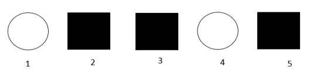

Question 1
Following is a sample of 1,000 gametes produced by a trihybrid individual. Please answer the following questions. Label each gamete (or haplotype) as non-recombinant, single recombinant or double recombinant. (Score 15)

Recombinant probability \(\theta\) has to be \(\leq 0.5\) and non-recombinat probability has to be \(\geq 0.5\). There are 1000 gametes and the total number of the two non-recombinant haplotypes shoule be greater or equal than 500 and only if we assume Btr|bTR as the individual’s diplotype, the assum . Below is my infer,
| BTR |
double recombinant |
| btr |
double recombinant |
| Btr |
non-recombinant |
| bTR |
non-recombinant |
| BtR |
single recombinant |
| bTr |
single recombinant |
| BTr |
single recombinant |
| btR |
single recombinant |
Question 2
What is the probability of following pedigree genotype? If f(D)=0.1 and genotypes for subject 1, 2, 3, 4, and 5 are G1 = DD, G2 = DD, G3 = G4 = G5 = Dd? (Score 15)

\(Pr(D) = 0.1 => Pr(d) = 0.9\)
\(Pr(DD) = 0.01, Pr(Dd) = 0.18, Pr(dd) = 0.81\)
\(Pr(G1, G2, G3, G4, G5)\)
\(= Pr(G1)Pr(G2)Pr(G3 | G1, G2)Pr(G4)Pr(G5|G3, G4)\)
Because there is no way \(G3\) can be Dd given her parents don’t contain d in there genotype, \(Pr(G3 | G1, G2) = 0\).
Hence,
\(Pr(G1, G2, G3, G4, G5) = 0\)
Question 3
Suppose an autosome locus has alleles of D and d with f(D)=0.1 and penetrance, Pr(Y = 1|G1 = DD) = 0.8, Pr(Y = 1|G1 = Dd) = 0.4, and Pr(Y = 1|G1 = dd) = 0.2. We collected a sample as following and all individuals have genotypes of Dd. What is the sample’s joint probability Pr(Y1, Y2, Y3, Y4, Y5, G1, G2, G3, G4, G5)? (Score 15)

\(Pr(D) = 0.1 => Pr(d) = 0.9\)
\(Pr(DD) = 0.01, Pr(Dd) = 0.18, Pr(dd) = 0.81\)
\(Pr(Y=1 | G1 = DD = 0.8) => Pr(Y=0 | G1 = DD = 0.2)\)
\(Pr(Y=1 | G1 = Dd = 0.4) => Pr(Y=0 | G1 = Dd = 0.6)\)
\(Pr(Y=1 | G1 = dd = 0.2) => Pr(Y=0 | G1 = DD = 0.8)\)
\(Pr(Y1, Y2, Y3, Y4, Y5, G1, G2, G3, G4, G5)\)
\(= Pr(Y1|G1)*Pr(Y2|G2)*Pr(Y3|G3)*Pr(Y4|G4)*Pr(Y5|G5)*Pr(G1,G2,G3,G4,G5)\)
all individuals are independent
\(= Pr(Y1|G1)*Pr(Y2|G2)*Pr(Y3|G3)*Pr(Y4|G4)*Pr(Y5|G5)*Pr(G1)*Pr(G2)*Pr(G3)*Pr(G4)*Pr(G5)\)
\(= Pr(Y=0|G1=Dd)^2 * Pr(Y=1|G1 = Dd)^3 * Pr(Dd)^5\)
\(= 0.6^2 * 0.4^2 * 0.18^5 = 0.00001088391\)
Question 4
Suppose an autosome locus has alleles of D and d with f(D)=0.1 and penetrance, Pr(Y = 1|G1 = DD) = 0.8, Pr(Y = 1|G1 = Dd) = 0.4, and Pr(Y = 1|G1 = dd) = 0.2. We collected a sample as following and we do not have their genotypes. What is the sample’s joint probability Pr(Y1, Y2, Y3, Y4, Y5, G1, G2, G3, G4, G5)? (Score 15)

\(Pr(D) = 0.1 => Pr(d) = 0.9\)
\(Pr(DD) = 0.01, Pr(Dd) = 0.18, Pr(dd) = 0.81\)
\(Pr(Y=1 | G1 = DD = 0.8) => Pr(Y=0 | G1 = DD = 0.2)\)
\(Pr(Y=1 | G1 = Dd = 0.4) => Pr(Y=0 | G1 = Dd = 0.6)\)
\(Pr(Y=1 | G1 = dd = 0.2) => Pr(Y=0 | G1 = DD = 0.8)\)
\(Pr(Y=0)\)
\(= Pr(Y=0, DD) + Pr(Y=0, Dd) + Pr(Y=0, dd)\)
\(= Pr(Y=0|DD)Pr(DD) + Pr(Y=0|Dd)Pr(Dd) + Pr(Y=0|dd)Pr(dd)\)
\(= 0.2*0.01 + 0.6*0.18 + 0.8*0.81 = 0.758\)
\(Pr(Y=1)\)
\(= Pr(Y=1, DD) + Pr(Y=1, Dd) + Pr(Y=1, dd)\)
\(= Pr(Y=1|DD)Pr(DD) + Pr(Y=1|Dd)Pr(Dd) + Pr(Y=1|dd)Pr(dd)\)
\(= 0.8*0.01 + 0.4*0.18 + 0.2*0.81 = 0.242\)
We don’t know the sample’s genotypes and all of them are independent, so, when calculating the joint probability we can just ignore their genotypes.
\(Pr(Y1, Y2, Y3, Y4, Y5, G1, G2, G3, G4, G5)\)
\(= Pr(Y1)*Pr(Y2)*Pr(Y3)*Pr(Y4)*Pr(Y5)\)
\(= Pr(Y=0)^2*Pr(Y=1)^3\)
\(= 0.758^2 * 0.242^3 = 0.00814300139\)
Question 5
Suppose an autosome locus has alleles of D and d with f(D)=0.1 and penetrance, Pr(Y = 1|G1 = DD) = 0.8, Pr(Y = 1|G1 = Dd) = 0.4, and Pr(Y = 1|G1 = dd) = 0.2. We collected a sample as following and all individuals have genotypes of Dd. What is the sample’s joint probability Pr(Y1, Y2, Y3, Y4, Y5, G1, G2, G3, G4, G5)? (Score 20)
\(Pr(D) = 0.1 => Pr(d) = 0.9\)
\(Pr(DD) = 0.01, Pr(Dd) = 0.18, Pr(dd) = 0.81\)
\(Pr(Y=1 | G1 = DD = 0.8) => Pr(Y=0 | G1 = DD = 0.2)\)
\(Pr(Y=1 | G1 = Dd = 0.4) => Pr(Y=0 | G1 = Dd = 0.6)\)
\(Pr(Y=1 | G1 = dd = 0.2) =>Pr(Y=0 | G1 = DD = 0.8)\)
\(Pr(Y1|G1) = Pr(Y=0|Dd) = 1\)
\(Pr(Y2|G2) = Pr(Y=1|dd) = 1\)
\(Pr(Y3|G3) = Pr(Y=1|dd) = 1\)
\(Pr(Y4|G4) = Pr(Y=0|DDorDd) = 1\)
\(Pr(Y5|G5) = Pr(Y=1|dd) = 1\)
\(Pr(G1) = Pr(Dd) = 0.18\)
\(Pr(G2) = Pr(G3) = Pr(G5) = Pr(dd) = 0.81\)
\(Pr(G3|G1,G2) = Pr(dd|Dd,dd) = 0.5\)
Ans = \(1*1*1*1*1*0.18*0.81^3*0.5 = 0.04782969\)